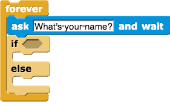

There are two parts that will make this work:
- Create a list to store the names of people the greeter knows.
- Create a script that gives the right greeting to each customer. First, the greeter asks the guest for his or her name. Then the greeter has to make a decision: is the guest in the list of
people I knowor not?- if
people I knowcontains the guest's name,say"nice to see you again, guest name." - esle
say"nice meet you, guest name," and add the guest's name to the list of known people.
- if

The decision making block is made with if-else

The workspace below has most of the pieces you need to make the script. Your job is to snap the peices together to get the project working correctly.